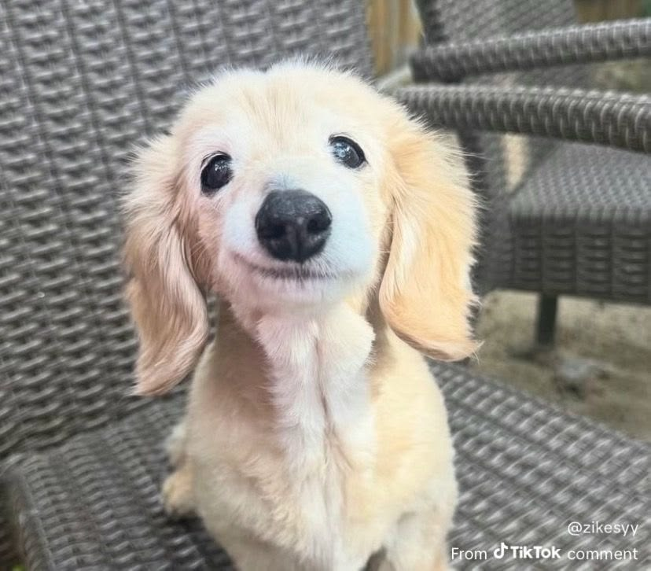

Perros y gatos
Son distintos, pero los dos son excelentes compañeros.


Aunque tienen formas de ser distintas, los perros y los gatos son las mascotas más comunes en los hogares. Los dos ofrecen compañía y suelen hacer más alegre la rutina de la familia.
Los perros necesitan más tiempo y salidas diarias, mientras que los gatos se adaptan mejor a pasar ratos solos. Por eso, elegir entre uno y otro depende del espacio, del tiempo libre y del estilo de vida de cada familia.
Lo más importante es que cualquier mascota reciba comida, agua, atención médica y mucho cariño. Adoptar en un refugio es una buena opción, porque hay muchos perros y gatos esperando un hogar.
Comparación rápida
| Perros | Gatos | |
|---|---|---|
| Carácter | Sociables y leales | Independientes y curiosos |
| Ejercicio | Paseos diarios | Juegos dentro de casa |
| Aseo | Necesitan baño de vez en cuando | Se asean solos |
| Compañía | Quieren estar con su familia | Aguantan mejor ratos solos |
| Comunicación | Ladran y mueven la cola | Maúllan y ronronean |
¿Cuál es mejor?
No hay una respuesta única. Depende de cada persona y de cada familia.